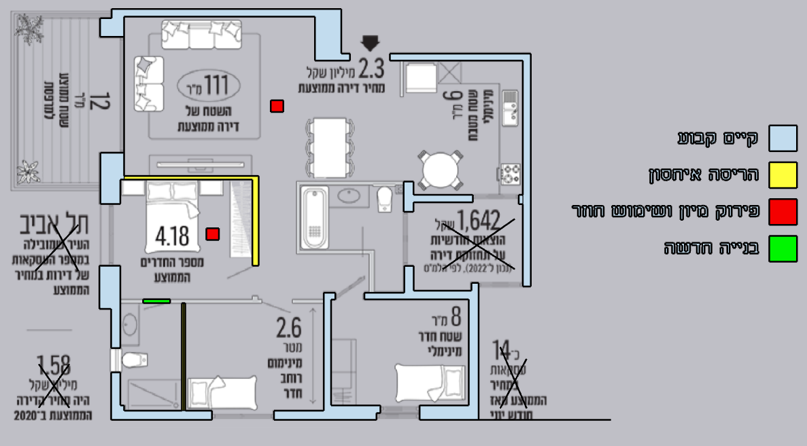

DISASSEMBLY / RECLAIMING COMPONENTS
COMPONENT RECOVERY / 04 ITEMS
MATERIAL BANK
RETAINED IN PLACE / ENVELOPE + CIRCULAR DIAGRAM
REMOVED COMPONENTS ARE STORED FOR REUSE — NOT DISCARDED.
REMOVED COMPONENTS ARE STORED FOR REUSE — NOT DISCARDED.
MOVE MOUSE / SCROLL TO DISASSEMBLE
RESEARCH / ISRAEL / CIRCULAR INTERIORSLIVING IN A CIRCULAR SYSTEMSame envelope. Different spatial configuration.
01 / APARTMENT RECONFIGURATION
EXISTING / DISASSEMBLE / REUSE / NEW
The original annotated design is shown with its own color key. Select a marked area for a design decision.
02 / REASSEMBLED RESEARCH
THE SHIFT
DEMOLITION → DISASSEMBLY
REUSED CONTENT
The circular system diagram stays anchored during the transformation; other original components are recovered and rearranged.
YEHUDA MIZRAHI
COLOR CODING IS EMBEDDED IN THE ORIGINAL ANNOTATED PLAN